Investigating virtual classroom feasibility, ICT infrastructure readiness, and designing an open-source learning platform for Nepal's education sector.
Nepal — a landlocked country ranking 140th in ICT development and 95th in the Global Innovation Index — faced a critical challenge. The COVID-19 pandemic exposed a massive gap: millions of students needed to continue learning, but the country's digital infrastructure and platform adoption were far behind developed nations.
I chose this as my diploma thesis because I saw firsthand how Nepal's education system was struggling to transition online. Virtual classrooms were already common in developed countries, but for Nepal, this was uncharted territory with real infrastructure constraints — bandwidth limitations, device accessibility gaps, and a lack of purpose-built platforms.
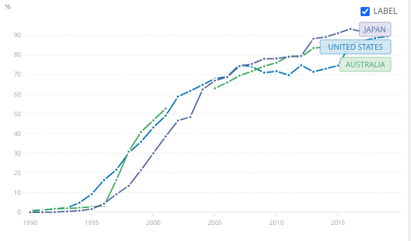
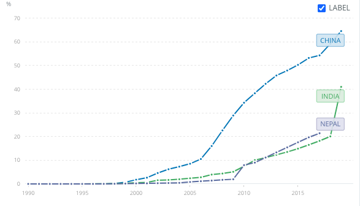
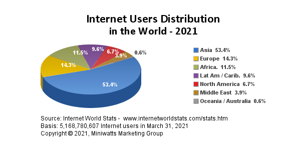
I followed an incremental build model — a structured engineering approach that allowed me to iteratively develop, test, and refine the platform. I combined technical implementation with analytical research, using the Software Usability Measurement Inventory (SUMI) framework to evaluate the platforms I studied.
Analyzed Nepal's education landscape, identifying the gap between available ICT infrastructure and the requirements for effective virtual classrooms.
Evaluated usability, interactivity, technical features, and bandwidth consumption across multiple e-learning platforms using SUMI methodology.
Compared Moodle, Blackboard, and Tele-Education platforms against criteria of cost, openness, bandwidth efficiency, and feature completeness.
Deployed a working Moodle instance locally using XAMPP (Apache + MySQL + PHP), configured courses, and validated the complete learning workflow.
Investigated Nepal's bandwidth availability, ISP landscape, and calculated per-user bandwidth requirements for various learning scenarios.
Tested the platform's real-time communication features, file sharing, messaging, and course management to validate feasibility within bandwidth constraints.
I identified two primary delivery models relevant to Nepal's context. Synchronous learning (real-time, via Zoom/Google Meet) demands higher bandwidth but enables live interaction. Asynchronous learning (stored content via Moodle) requires minimal bandwidth and offers flexibility — critical for students with intermittent connectivity.
My key finding: for Nepal's infrastructure, a hybrid model works best — Moodle for asynchronous content delivery combined with WiZiQ or Zoom plugins for occasional live sessions. This minimizes constant bandwidth pressure while maintaining engagement.
Assigns specific roles (teacher, student, admin, team leader) with controlled access to microphone, whiteboard, and content. Best for structured academic delivery where the instructor leads.
All participants have equal privileges. Suited for group discussions, brainstorming, and peer learning. Supports "break-away teams" for smaller group work within sessions.
| Criteria | Moodle | Blackboard | Tele-Education |
|---|---|---|---|
| Open Source | ✓ Free (GPL) | ✗ Licensed | ✗ Licensed |
| Plugin Ecosystem | ✓ Extensive | Limited | Minimal |
| Bandwidth Efficient | ✓ Very efficient | Moderate | High demand |
| Multi-language | ✓ 120+ languages | ✓ Supported | Limited |
| SaaS Deployable | ✓ Yes | ✓ Yes | Complex |
| Community Support | ✓ 90M+ users | Commercial support | Limited |
| Live Class Plugin | ✓ WiZiQ integration | ✓ Built-in | ✓ Built-in |
I calculated bandwidth requirements for various scenarios. Key finding: basic Moodle operation (content access, messaging, file sharing) works effectively at 200 Kbps per user. Video streaming for live sessions requires 1.5–5 Mbps depending on quality. Nepal's existing infrastructure — with 91% internet penetration and growing 4G adoption — can support asynchronous learning now, with synchronous sessions feasible in urban areas.
For a district with 1000 teachers at 50% peak simultaneous video usage: 1000 × 50% × 756 Kbps ≈ 378 Mbps aggregate bandwidth needed. This is achievable for Nepal's urban ISPs but requires infrastructure investment in rural areas.
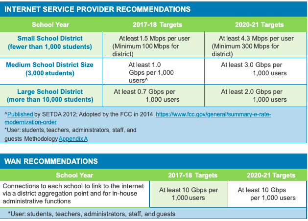
I built and deployed the e-learning platform using the LAMP/XAMPP stack — a proven, cost-free architecture that aligns with Nepal's need for zero-licensing-cost solutions. The platform runs on Apache web server, MySQL for data persistence, and PHP as the application layer, with Moodle as the learning management framework.
I documented and completed the full deployment pipeline — from downloading and installing Moodle through XAMPP, configuring Apache and MySQL services, creating the database infrastructure, running the web-based installer, and finally standing up a fully operational LMS with course management capabilities.
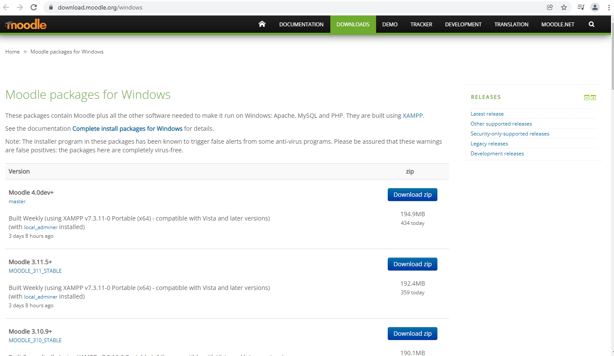
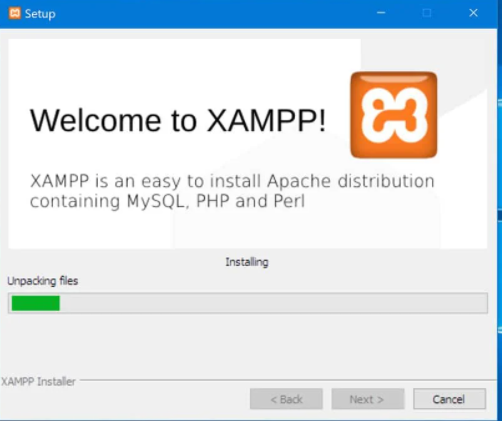
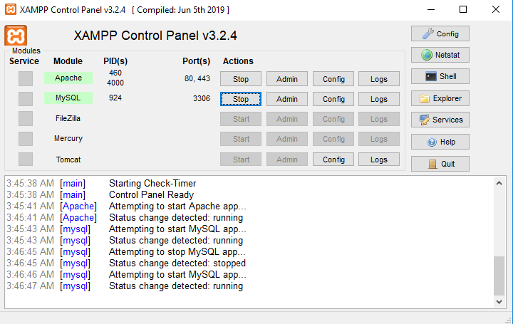
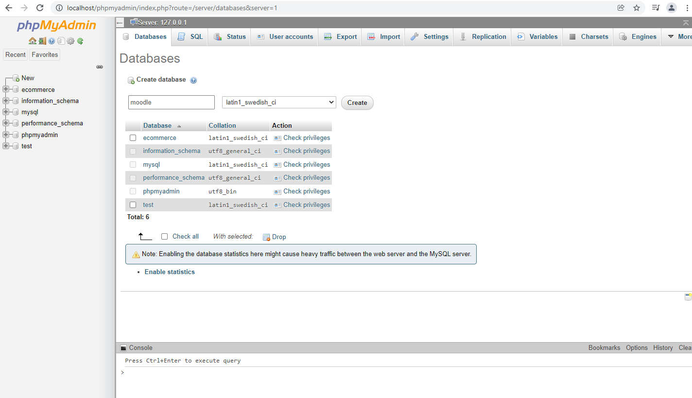
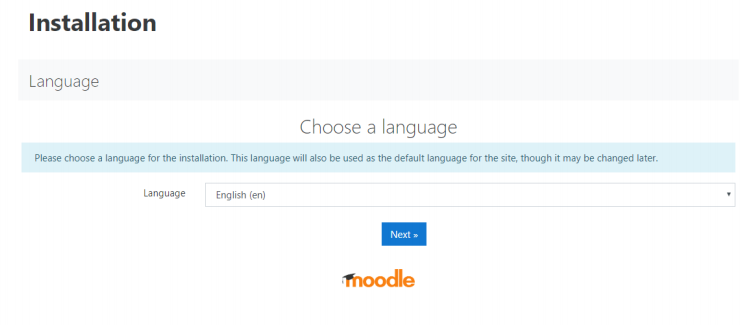
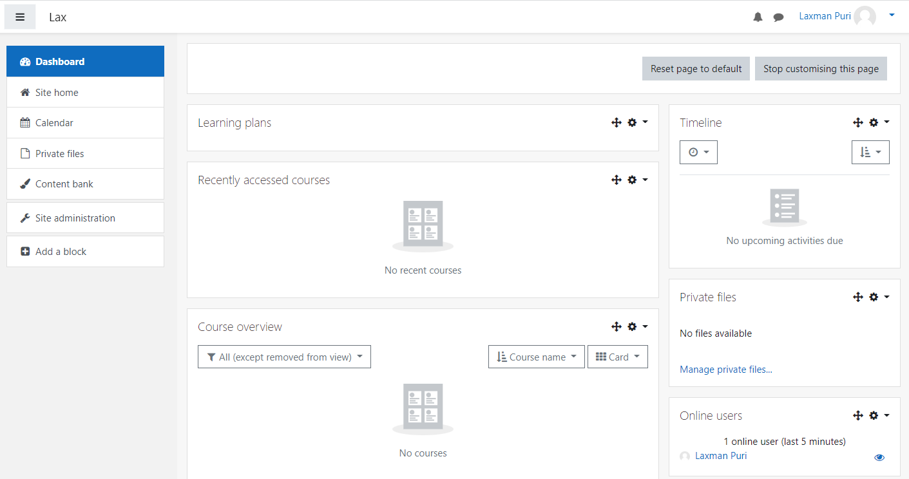
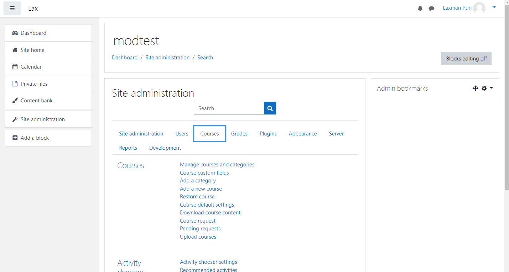
I configured and validated the following capabilities within the deployed platform:
Moodle's zero-cost, community-driven model proved to be the only viable long-term solution for Nepal's education sector. Licensed platforms like Blackboard create unsustainable financial dependencies.
With 91% internet penetration and growing 4G/5G adoption, Nepal's existing infrastructure can support asynchronous e-learning today. The real challenge has shifted from connectivity to platform adoption and digital literacy.
Combining asynchronous content (available 24/7, low bandwidth) with scheduled live sessions maximizes reach while accommodating infrastructure variability across urban and rural areas.
My usability analysis revealed that most platforms deployed in developing countries are done without user requirement studies. This creates adoption barriers that technology alone cannot solve.
Hosting Moodle as Software-as-a-Service eliminates the need for each institution to maintain its own server infrastructure — a critical advantage for resource-constrained schools.
Before any platform can succeed, three prerequisites must be met: reliable power supply, affordable internet access for students and teachers, and availability of devices. Policy must address these fundamentals.